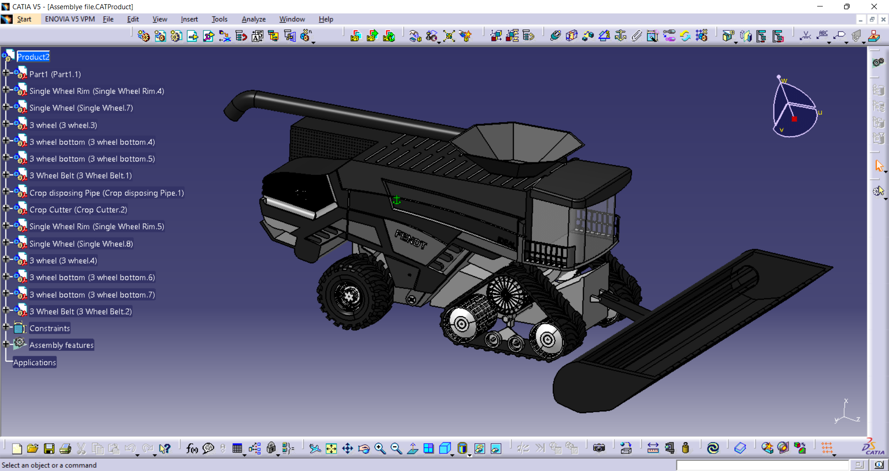

As a part of CAD sessional Course, designed an automated agricultural machinery and tractor – “ Fendt Ideal 10T ” by using CATIA only. This 3D model has 15 Parts, all the parts assembled in one file. Some minor details are ignored due to less requirements.
Designed Using CATIA
The complete 3D model was designed using CATIA. CATIA (Computer-Aided Three-Dimensional Interactive Application) is a powerful and versatile CAD/CAM/CAE software developed by Dassault Systèmes. Widely used in the aerospace, automotive, and other industries, CATIA enables the creation, simulation, and analysis of complex 3D models and designs. Its robust capabilities include product development, surface modeling, engineering simulations, and collaborative design, making it a comprehensive solution for product lifecycle management.
YOU CAN'T BETTER DESING WITH A COMPUTER, BUT YOU CAN SPEED UP YOUR WORK ENORMOUSLYBy: Wim Crouwel
Circular Patterns and Indentations were used to desing the wheels. Also using mirror feature the whole body was created
Main Wheel (Back)
3D Design involves the creation of three-dimensional digital models of objects or products using specialized software. It allows engineers and designers to visualize, simulate, and optimize their designs before physical production. 3D CAD design is widely employed across various industries, from architecture to manufacturing, streamlining the product development process and enhancing precision in prototyping and production.